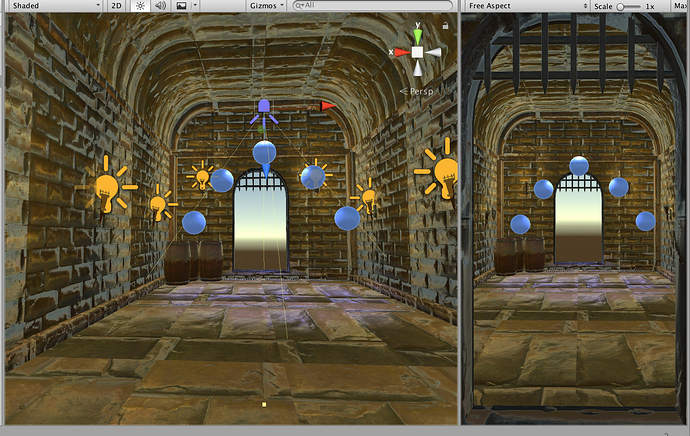
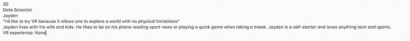
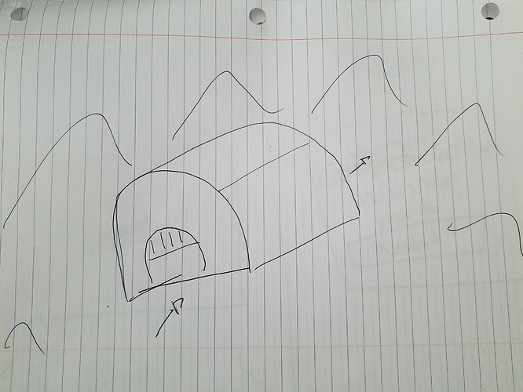
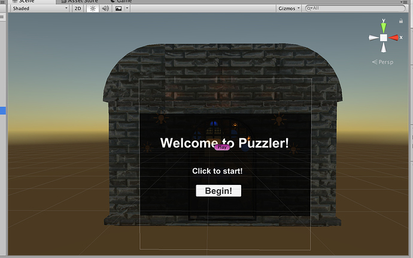

The puzzler VR app is a great introduction for those with no VR experience. This is a project that focuses on how to design VR environments by building it as pleasant and understandable as possible. The game, it’s challenging but not difficult, that makes it fun and increases the curiosity of the user to discover more of VR. This is very similar to “Simon Game” in which the objects randomly light up in a certain order and the player has to click following that order. The project took me more time than expected, but this helped me find ways to do it more efficient, like building half of the dungeon with torches and lights and then create a copy of it, rotate it and stick them together. Created a new empty game object to later increase or decrease the whole building after the user tests.
The Puzzler is designed in a simple and neat way that makes it great to introduce VR to those that have never experience it, easy movement, clickable buttons and background sound that merges into the environment. Tha game is very straightforward, players understand what has to be done once the game starts.
Statement of Purpose: The Puzzler is a simple and easy to use mobile VR app that engages new VR users to solve a puzzle similar to the Simon game in a challenging and fun way.
My user for this project is my husband. The user can help the designer understand what can be improved in the VR app. Such as the feeling, if there is any motion sickness, sizes. Updating every time there is a change can be tedious but it definitely saves time and you can finish your project with more confidence.
In my sketches I tried to draw what I wanted in my VR app, having something on paper helped with how I wanted to start building.
For my first user test, I asked a user with very little VR experience the questions below to help judge if the scale of the building and objects in the scene felt appropriate.
I had to increase the size of the building so it did not feel like the user will hit their head entering the dungeon.
My second test was done after adding 2 billboard signs to start and restart the game and background sound
Following the user’s feedback, I moved the center position more backward so the player can see all the orbs by looking straight forward.
Last user test was done after the VR app was completed.
Moved the player up so it would be further away from the floor
The VR app starts with the player outside of the dungeon. The game starts once “Start” the button is clicked.
Game starts by entering the dungeon, there will be orbs floating that will light up in a certain order. Player has to follow the sequence to win. If player makes a mistake, sound of mistake will play and then another sequence will start. After winning, player comes outside of the dungeon and will be faced with a billboard with a button to restart
This VR app project was a great learning experience. Gained the knowledge of basic design for VR and its principles. Sketching helps with giving you a better picture of what was imagined in your head. Having other people test and tell you more from their perspective will improve the experience of the app.